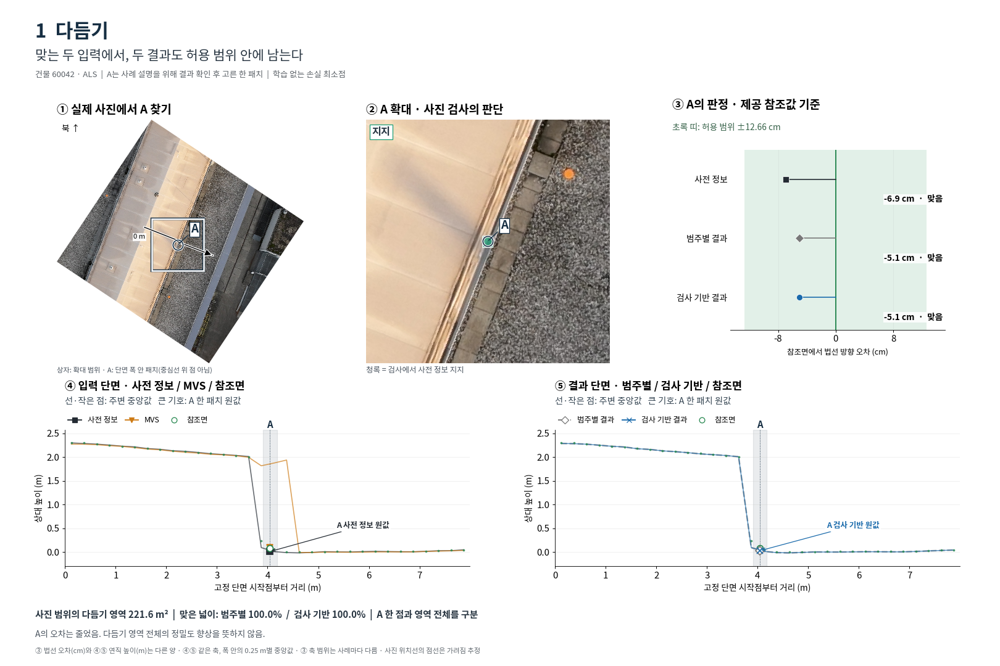
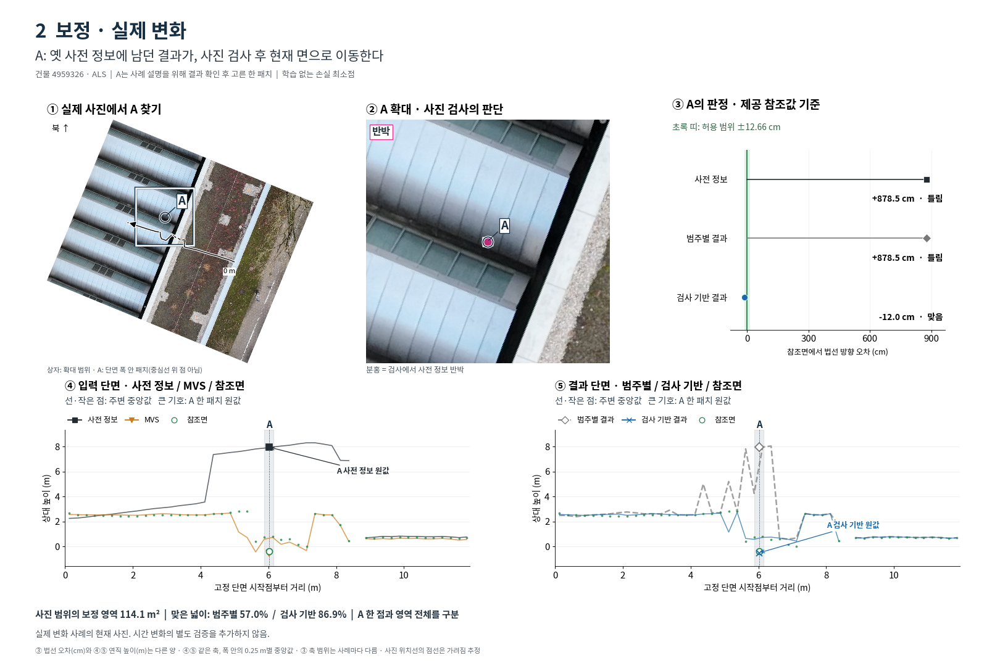
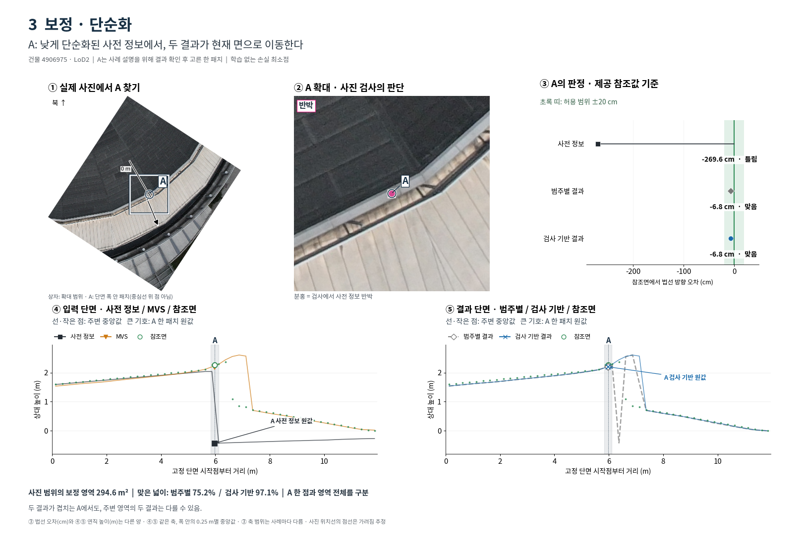
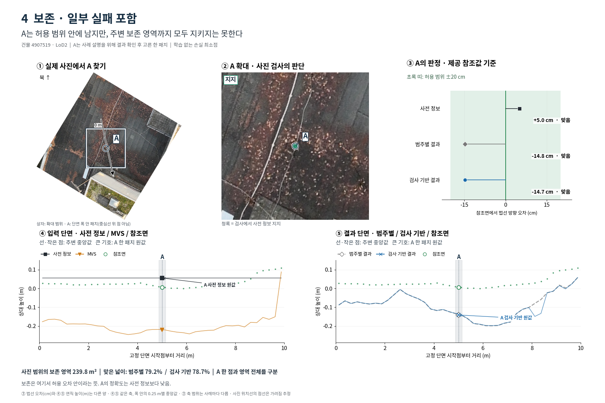
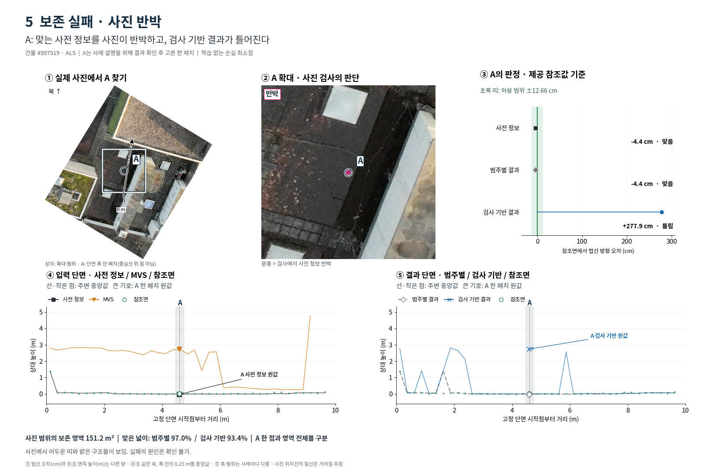
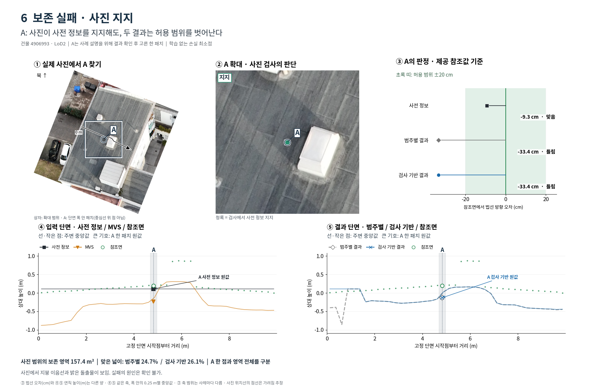
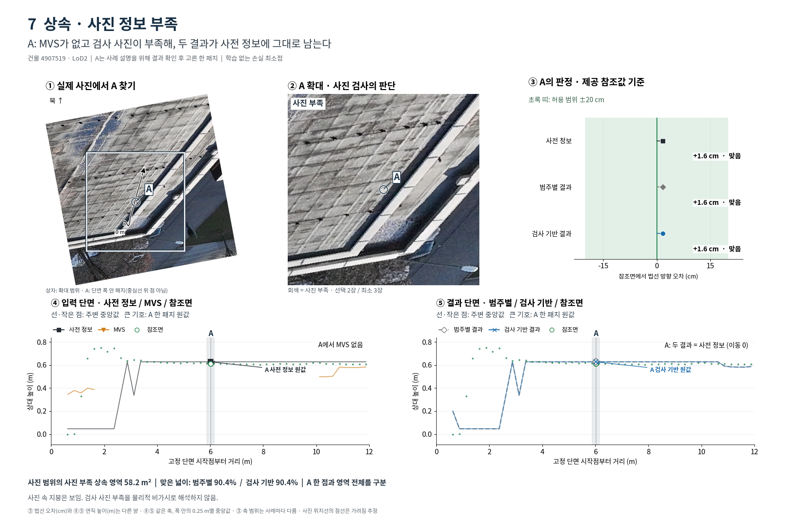
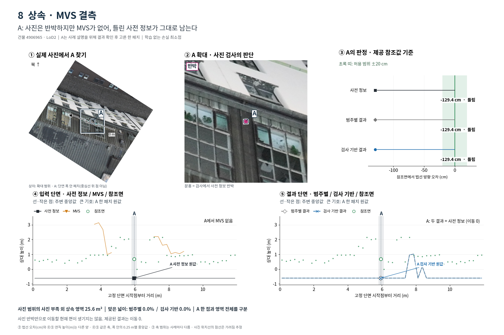

여덟 케이스 대표 그림
같은 A를 사진 → 검사 판단 → 제공 참조값 기준 판정 → 단면으로 따라갑니다. 결과는 학습 없는 손실 최소점이며 A는 결과 확인 후 고른 설명용 패치입니다.
1. 다듬기
맞는 두 입력에서, 두 결과도 허용 범위 안에 남는다

300 dpi 원본 · 동일 패치 수치
2. 보정 · 실제 변화
A: 옛 사전 정보에 남던 결과가, 사진 검사 후 현재 면으로 이동한다

300 dpi 원본 · 동일 패치 수치
3. 보정 · 단순화
A: 낮게 단순화된 사전 정보에서, 두 결과가 현재 면으로 이동한다

300 dpi 원본 · 동일 패치 수치
4. 보존 · 일부 실패 포함
A는 허용 범위 안에 남지만, 주변 보존 영역까지 모두 지키지는 못한다

300 dpi 원본 · 동일 패치 수치
5. 보존 실패 · 사진 반박
A: 맞는 사전 정보를 사진이 반박하고, 검사 기반 결과가 틀어진다

300 dpi 원본 · 동일 패치 수치
6. 보존 실패 · 사진 지지
A: 사진이 사전 정보를 지지해도, 두 결과는 허용 범위를 벗어난다

300 dpi 원본 · 동일 패치 수치
7. 상속 · 사진 정보 부족
A: MVS가 없고 검사 사진이 부족해, 두 결과가 사전 정보에 그대로 남는다

300 dpi 원본 · 동일 패치 수치
8. 상속 · MVS 결측
A: 사진은 반박하지만 MVS가 없어, 틀린 사전 정보가 그대로 남는다

300 dpi 원본 · 동일 패치 수치
보고서 · 수치·원본 보존 검증